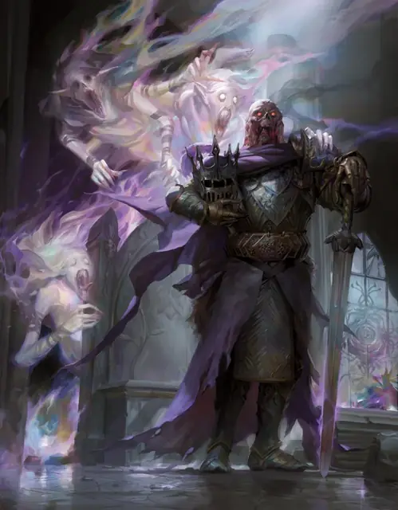

Лорд Сот Ситикусский
Lord Soth of Sithicus
Средняя Нежить, Принципиальная Злая, именной НИП

Класс Защиты 18 Инициатива +6 (16)
Хиты 228 (24к8 + 120)
Скорость 30 футов
| мод | спас | ||
|---|---|---|---|
| СИЛ | 22 | +6 | +6 |
| ЛОВ | 11 | +0 | +0 |
| ТЕЛ | 20 | +5 | +5 |
| мод | спас | ||
|---|---|---|---|
| ИНТ | 12 | +1 | +1 |
| МДР | 16 | +3 | +9 |
| ХАР | 20 | +5 | +11 |
Иммунитеты Некротический, Яд; Испуганный, Истощение, Отравленный
Чувства Тёмное зрение 120 футов, пассивное Восприятие 13
Языки Общий, Инфернальный
Опасность 19 (22 000 опыта или 25 000 опыта в Домене; БВ +6)
Особенности
Восстановление Тёмного владыки. Спустя 1к10 недель после смерти лорд Сот возрождается с полными Хитами в где-то в Ситикусе.
Легендарное сопротивление (3/день, или 4/день в Домене). Если лорд Сот проваливает спасбросок, она вместо этого может в нём преуспеть.
Сопротивление магии. Лорд Сот совершает с Преимуществом спасброски от заклинаний и прочих магических эффектов.
Военачальник нежити. Существа типа Нежить по выбору лорда Сота (исключая его самого) в 60-футовой Эманации, исходящей от него, совершают с Преимуществом броски атаки и спасброски. Он не может пользоваться этой особенностью, если Недееспособен.
Действия
Мультиатака. Лорд Сот совершает три атаки Клеймом Отверженного.
Клеймо Отверженного. Бросок рукопашной атаки: +12, досягаемость 5 фт. Попадание: 10 (1к8 + 6) Рубящего урона плюс 13 (3к8) Некротического урона.
Катаклизменный огонь (Перезарядка 5–6). Спасбросок Ловкости: Сл 19, каждое существо в 20-футовой Сфере с центром в точке, видимой лордом Сотом в пределах 120 футов. Провал: 28 (8к6) урона Огнём плюс 28 (8к6) Некротического урона. Провал или успех: Только половина урона.
Лик смерти. Спасбросок Харизмы: Сл 19, все существа в 60-футовой Эманации, исходящей от лорда Сота. Провал: 22 (4к10) Психического урона, и цель Испугана до конца своего следующего хода. Успех: Только половина урона. Провал или успех: Если этот урон опускает Хиты цели до 0, цель умирает.
Бонусные действия
Властная магия (3/день). Лорд Сот сотворяет Изгнание (версия 5-го уровня), Рассеивание магии или Удержание личности (заклинательная характеристика — Харизма, Сл спасброска заклинаний 19).
Легендарные действия
У этого существа есть 3 использования Легендарных действий (или 4 использования в Домене); оно может немедленно после окончания хода другого существа потратить одно использование, чтобы совершить одно из следующих действий. Существо восполняет все потраченные использования в начале каждого своего хода.
Возмездие. Лорд Сот перемещается на расстояние вплоть до половины своей Скорости и совершает одну атаку Клеймом Отверженного.
Веление Сота. Лорд Сот сотворяет Приказ (версия 3-го уровня; заклинательная характеристика — та же, что для Властной магии). Лорд Сот не может совершить это действие снова до начала своего следующего хода.
Бонус мастерства +6
Лорд Сот Ситикусский
Тёмный владыка, что проклят воспоминаниями
Лорд Лорен Сот снедаем тоской в своём домене, который лишь насмехается над ним и приносит одни разочарования. Познавший твёрдые законы рыцарства и воинской дисциплины, Сот находит Ситикус пустым и хаотичным, а его народ — апатичным и распущенным. Эльфийская красота, некогда пленившая его, обратилась в руины; земля пылает огнём Катаклизма Кринна, а тени этого мира служат рыцарю вечным напоминанием о былых неудачах. Хуже того, здесь нет достойных противников, способных бросить ему вызов. И Сот безвылазно сидит на троне в цитадели Недрагаард, терзаемый банши, чьи песни разносят весть о его бесчестии, и сгнившими копиями рыцарей, что некогда служили ему.
Лорд Сот не питает к своему домену никаких чувств. Однако, если на горизонте появляется заметная угроза или незаурядная личность, он стремится либо сокрушить её, либо обратить себе на службу. Исключением будет лишь дух его вероломного бывшего соратника — Карадока. Неживые слуги Сота и его сенешаль-вербарсук Азраил Дакс прочёсывают земли в поисках неуловимого призрака.
Сот делит своё заключение в Ситикусе со всеми обитателями домена, держа его границы вечно закрытыми. Лишь те, кто сумеет расшевелить его или вторгнуться в Недрагаард, могут убедить его позволить им бежать. Это смертельный риск — навлечь на себя гнев могучего рыцаря смерти, но Сот всё ещё мнит себя истинным рыцарем и порой помогает тем, кто предстаёт воинами чести или знает что-нибудь о его родном мире.
История лорда Сота
Лорду Соту была дана миссия — спасти народ своего мира, Кринна, от гнева богов. Однако, ослеплённый низменной паранойей и ревностью к своей жене-эльфийке, Сот отверг это начинание, и мир был опустошён Великим Катаклизмом. В наказание Сот был воскрешён как рыцарь смерти и столетиями предавался мрачным думам о своём позоре в обугленных руинах собственной твердыни — замка Даргаард.
Когда злая богиня Такхизис нашептала Соту обещания вернуть ему былую славу и отомстить героическим рыцарям, что давным-давно изгнали его, Сот ответил на зов и стал служить ей. В это же время он призвал своих неживых слуг, включая призрак рыцаря Карадока. Желая создать новое рыцарство из верных мертвецов, Сот стал одержим драконьей владычицей Китиарой Ут-Матар и поручил Карадоку пленить её душу. Когда Китиара пала в битве, Карадок отказался захватить её дух, пока Сот не выторгует у Такхизис воскрешение Карадока. В ярости Сот попытался уничтожить Карадока, но вокруг них уже сгустились Туманы.
Когда Туманы рассеялись, Сот очутился в домене Баровия. Какое-то время он считал своим союзником графа Страда фон Заровича, но два злодея не смогли долго терпеть друг друга. В конце концов, преследуя слухи о своём вероломном слуге Карадоке, Сот вошёл в Туманы, пока перед ним не раскинулся домен Ситикус.
Домен лорда Сота
Ситикус, домен лорда Сота, изменяется из-за его присутствия, что создаёт следующие эффекты:
• Закрытие границ. Когда лорд Сот находится в домене, он способен по желанию закрывать или открывать границы Ситикуса. Когда границы закрыты, Туманы вокруг Ситикуса наполняются пурпурным пламенем. Существо, впервые за ход входящее в Туманы или начинающее в них ход, получает 5 (1к10) урона Огнём плюс 5 (1к10) Некротического урона.
• Бесстрашные солдаты. Нежить, союзная лорду Соту, обладает Иммунитетом к состоянию Испуганный.
• Вина Ситикуса. Мало кому спится в Ситикусе спокойно. Всякий раз, когда существо (кроме лорда Сота и его союзников) завершает Долгий отдых в домене, оно должно совершить спасбросок Телосложения Сл 10; при провале оно получает 1 уровень Истощения.
Если лорд Сот умирает, все эти эффекты мгновенно исчезают. Они возникают вновь, если лорд Сот возрождается (см. Восстановление Тёмного владыки).